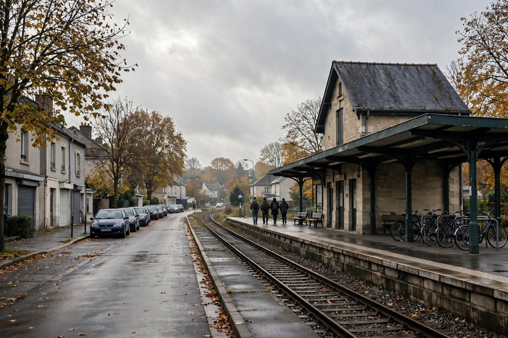

पेरिस नजिकै ट्राप र ला भेरिएरमा कारबाट गोली प्रहार, एक जनाको मृत्यु, पाँच घाइते
शुक्रबार बिहान पेरिसको पश्चिममा रहेको इभलिनका दुई सहर ट्राप र ला भेरिएरमा एक व्यक्तिले कारबाट लगातार गोली चलाउँदा एक जनाको मृत्यु भयो र १२ वर्षीया बालिकासहित चार जना घाइते भए। प्रहरीले नजिकैको कोइनिएरमा एक संदिग्धलाई पक्राउ गर्यो, र ले फिगारोका अनुसार राष्ट्रिय आतंकवाद विरोधी अभियोजक कार्यालयले मुद्दा लिएको छ।

मुख्य बुँदाहरू
- राष्ट्रपति इमानुएल म्याक्रोनले शुक्रबार साँझ ट्र्याप्सको भ्रमण गरेर गोलीकाण्डलाई जातिवादी आतंकवादी हमला भने, एलिसे प्यालेसले पनि भ्रमणको घोषणा गर्दा त्यही शब्द प्रयोग गर्यो। "आज यहाँ जे भयो त्यो…
- एसोसिएटेड प्रेस र BBC News का अनुसार गृहमन्त्री लरेन्ट नुनेजले हमलावरले एक जनालाई गोली हानी मारेको र अन्य पाँच जनालाई घाइते बनाएको बताए, जसमध्ये तीन जना अत्यन्त गम्भीर अवस्थामा छन् र उनीहरूको जीवन…
- एसोसिएटेड प्रेसका अनुसार फ्रान्सको राष्ट्रिय आतंकवाद विरोधी अभियोजक कार्यालयले यस मामिलामा आतंकवादी उद्यमसँग जोडिएको हत्याको अनुसन्धान भइरहेको र पीडित कुनै खास जाति, जातीय समूह, राष्ट्रियता वा…
अद्यावधिक 02:00 UTC
राष्ट्रपति इमानुएल म्याक्रोनले शुक्रबार साँझ ट्र्याप्सको भ्रमण गरेर गोलीकाण्डलाई जातिवादी आतंकवादी हमला भने, एलिसे प्यालेसले पनि भ्रमणको घोषणा गर्दा त्यही शब्द प्रयोग गर्यो। "आज यहाँ जे भयो त्यो जातिवादी आतंकवादी हमला थियो," म्याक्रोनले ट्र्याप्समा भने, CNN, The Wall Street Journal र Newsmax का अनुसार। "यो एउटा मोड हो, किनकि हाम्रा देशवासी र हाम्रा बालबालिकालाई उनीहरूको छालाको रङ वा उनीहरूको मानिएको धर्मका कारण मार्न योजना बनाइएको आतंकवादी कार्य यो पहिलो पटक हो।" म्याक्रोनले हमलावरले केही मानिसलाई छोडेर छालाको रङ र रूपका आधारमा आफ्ना निशाना छानेको बताए, CNN ले जनायो। CNN ले पक्राउ परेका संदिग्धलाई केभिन T., ३९ वर्षका रूपमा नाम दियो, पारिवारिक थर दिएन, जुन फ्रान्सेली फौजदारी मामिलामा सामान्य हो। Le Monde ले Square Louis-Pergaud मा मारिएका व्यक्तिलाई पोइसीका २६ वर्षीय पेन्गो B.-W. का रूपमा चिनायो, उनी एक शौकिया मिश्रित मार्सल आर्ट खेलाडी थिए र उनको क्लब Atch Academy ले Instagram मा उनलाई श्रद्धाञ्जली दियो। नेसनल र्यालीकी नेता मरिन ले पेनले X मा हमलालाई जातिवादले गम्भीर बनेको आतंकवादी प्रकृतिको आपराधिक कार्य भन्दै निन्दा गरिन्, Le Monde ले जनायो। आतंकवाद विरोधी अभियोजकहरूले शुक्रबार राति पाँचै घाइतेको अवस्था अझै स्थिर नभएको बताए, Le Monde ले जनायो, जुन १२ वर्षीया बालिका स्थिर रहेको भन्ने अघिल्लो स्थानीय विवरणभन्दा बढी सतर्क छ।
अद्यावधिक 16:35 UTC
एसोसिएटेड प्रेस र BBC News का अनुसार गृहमन्त्री लरेन्ट नुनेजले हमलावरले एक जनालाई गोली हानी मारेको र अन्य पाँच जनालाई घाइते बनाएको बताए, जसमध्ये तीन जना अत्यन्त गम्भीर अवस्थामा छन् र उनीहरूको जीवन खतरामा छ। यसले यसअघिको चार घाइते भन्ने आधिकारिक विवरणलाई संशोधन गर्छ। नुनेजले यस आक्रमणलाई सम्भावित जातीय उद्देश्यसहितको आतंकवादी अपराध भने र संदिग्धलाई रोक्ने अपराध विरोधी ब्रिगेडका पाँच अधिकारीको प्रशंसा गरे। समानता र भेदभाव विरुद्धको लडाइँकी मन्त्री ओरोर बेर्जेले १२ वर्षीया बालिका अत्यन्त गम्भीर रूपमा घाइते भएको बताइन् र जातीय उद्देश्य पुष्टि भएमा सम्पूर्ण राष्ट्र ट्राप र ला भेरिएरका बासिन्दा र पीडितहरूको साथमा उभिनुपर्ने बताइन्। संदिग्धको घरमा ग्यास सिलिन्डरसहितको पासो थापिएको भन्ने खबरबारे सोध्दा नुनेजले अनुसन्धानले तथ्य स्थापित गर्ने बताए, AP ले जनायो। द टाइम्सका अनुसार क्षेत्रका सांसद लरेन्ट मजोरीले संदिग्धले अधिकारीहरूलाई विदेशीहरूलाई मार्न चाहेको बताएका थिए भने। अधिकारीहरूले कुनै उद्देश्य पुष्टि गरेका छैनन्, र आतंकवाद विरोधी अभियोजकको अनुसन्धान जारी छ।
अद्यावधिक 15:10 UTC
एसोसिएटेड प्रेसका अनुसार फ्रान्सको राष्ट्रिय आतंकवाद विरोधी अभियोजक कार्यालयले यस मामिलामा आतंकवादी उद्यमसँग जोडिएको हत्याको अनुसन्धान भइरहेको र पीडित कुनै खास जाति, जातीय समूह, राष्ट्रियता वा धर्मको वास्तविक वा अनुमानित सदस्य भएको कारणले अपराध गरिएको हुन सक्ने गम्भीर परिस्थिति पनि अनुसन्धानमा रहेको बतायो। गृहमन्त्री लरेन्ट नुनेजले गोलीकाण्ड ट्राप र ला भेरिएरका तीन छुट्टाछुट्टै ठाउँमा भएको र हमलावरले सैन्य स्तरको जस्तो देखिने, वा कम्तीमा स्वचालित हतियार प्रयोग गरेको बताए। द वाल स्ट्रिट जर्नलका अनुसार नुनेजले यो गोलीकाण्ड करिब १५ मिनेट चलेको र त्यसपछि प्रहरीले कोइनिएरमा संदिग्धलाई पक्राउ गरेको बताए।
AP र जर्नलका अनुसार ट्रापका मेयर अली राबेहले मारिएका व्यक्ति अफ्रिकी मूलका रहेको, उनीमाथि खेल मैदानमा गोली चलेको र गम्भीर घाइतेमध्ये एक जना उत्तर अफ्रिकी मूलका रहेको बताए। जर्नलका अनुसार ला भेरिएरका मेयर निकोलस डेनभिलले CNEWS लाई हमलावर एक समयमा कारबाट ओर्लिएर २९ र ४८ वर्षका दुई पुरुषमाथि गोली चलाएको, एक बाटो हिंड्नेलाई "तिमी भाग्यमानी रहेछौ" भनेको र त्यसपछि १२ वर्षीया बालिकामाथि गोली चलाएको बताए। CNN ले BFM लाई उद्धृत गर्दै बालिकालाई आठ गोली लागेको जनायो। राष्ट्रपति एमानुएल म्याक्रोँले X मा हत्याप्रति गहिरो दुःख व्यक्त गरे, संदिग्धलाई हिरासतमा लिने सुरक्षा निकायलाई धन्यवाद दिए र आतंकवाद विरोधी अभियोजक कार्यालयले मुद्दा लिएको पुष्टि गरे। BBC News ले फ्रान्सेली सञ्चारमाध्यमलाई उद्धृत गर्दै संदिग्ध ३९ वर्षका रहेको र उनी प्रहरीलाई चिनिएका भए पनि फ्रान्सका गुप्तचर सेवाहरूलाई चिनिएका थिएनन् भनी जनायो। पुष्टि भएको विवरण अझै पनि एक जनाको मृत्यु र अन्य चार जना गम्भीर घाइते नै छ।
शुक्रबार २३ अक्टोबर बिहान पेरिसको पश्चिममा रहेको इभलिन विभागका दुई छिमेकी सहर ट्राप र ला भेरिएरका सार्वजनिक सडकमा एक व्यक्तिले कारबाट गोली चलाउँदा एक जनाको मृत्यु भयो र चार जना घाइते भए। एक प्रहरी स्रोतले रोयटर्सलाई यस ड्राइभ-बाइ गोलीकाण्डमा एक जनाको मृत्यु भएको र कम्तीमा चार जना घाइते भएको बताए, र फ्रान्सेली प्रसारक BFM ले एक संदिग्ध पक्राउ परेको जनायो। युरोन्युजले उही प्रहरी विवरण उद्धृत गर्दै ती सहरहरू पेरिसबाट करिब २५ देखि ३० किलोमिटर दक्षिणपश्चिममा रहेको र गोलीकाण्ड स्थानीय समय अनुसार बिहान करिब १०:३० बजे भएको जनायो।
दुई सहरका धेरै ठाउँमा गोली चल्यो
ले फिगारोका अनुसार ती व्यक्तिले दुवै सहरमा आफ्नो कारको झ्यालबाट भेदभाव नगरी लगातार गोली चलाए। अखबारका अनुसार ट्रापमा हुलाक कार्यालय नजिक, स्क्वायर लुइस पेर्गाउमा र RN10 सडक छेउको पेट्रोल पम्पमा, तथा एउटा नर्सरी विद्यालय र अर्को बालबालिकाको चौक नजिक पनि गोली चल्यो। ले फिगारोका अनुसार ला भेरिएरमा उनले SNCF रेलवे स्टेसन र एउटा औषधि पसल नजिक पनि गोली चलाए। एक प्रहरी स्रोतले अखबारलाई हमलावर खैरो रेनल्ट क्लियो कारमा रहेको र दोस्रो विश्वयुद्ध कालको स्टेन प्रकारको सबमेसिन गन प्रयोग गरेको बताए।
घाइतेमध्ये एक १२ वर्षीया बालिका
ले फिगारोका अनुसार गृहमन्त्री लरेन्ट नुनेजले मध्याह्नको पत्रकार सम्मेलनमा पहिलो विवरण पुष्टि गरे: एक मृत र चार घाइते। इभलिन प्रान्त प्रशासनले उद्धार सेवाहरू अझै काममा रहेको र विवरण अझै स्थिर नभएकाले संख्या बदलिन सक्ने जनायो। एक स्रोतले ले फिगारोलाई घाइतेमध्ये एक १२ वर्षीया बालिका रहेको र उनी गम्भीर घाइते भएको बताए। ट्रापका मेयर अली राबेहले BFMTV लाई ती व्यक्तिले आफ्नो कारबाट गोली चलाएको र, उनका शब्दमा, उनी जथाभावी गोली चलाउँदै नरसंहार गर्न खोजेको जस्तो देखिएको बताए। राबेहले हमलावर नजिकैको सहरमा बस्ने र उनका उद्देश्यबारे अहिलेसम्म कुनै जानकारी नभएको बताए।
RN10 मा कोइनिएरमा संदिग्ध पक्राउ
ले फिगारो र युरोन्युजका अनुसार प्रहरीले दुवै घटनास्थल नजिकको सहर कोइनिएरमा RN10 छेउमा संदिग्धलाई चाँडै पक्राउ गर्यो। फ्रान्सेली सञ्चारमाध्यमले संदिग्धको नाम केभिन T. बताए। प्रधानमन्त्री सेबास्टियन लेकोर्नुले X मा संदिग्धलाई पक्राउ गरी हिरासतमा राखिएको र सुरक्षा बल तथा न्यायिक निकायका सबै स्रोत पूर्ण रूपमा परिचालन गरिएको लेखे।
आतंकवाद विरोधी अभियोजकले मुद्दा लिए
राष्ट्रिय आतंकवाद विरोधी अभियोजक कार्यालयले ले फिगारोलाई आफू मुद्दामा अवलोकनमा रहेको बतायो, र लेकोर्नुले X मा कार्यालयले अवस्था नियालिरहेको पुष्टि गरे। ले फिगारोको प्रत्यक्ष कभरेजले पछि आतंकवाद विरोधी अभियोजकले मुद्दा लिएको जनायो, शीर्षकमा हमलावर नरसंहार गर्न चाहेको भनिएको थियो। रोयटर्सका अनुसार पहिला आधिकारिक भनाइहरूमा कुनै उद्देश्य स्थापित भएको थिएन, र अभियोजक कार्यालयका प्रतिनिधिले टिप्पणीको अनुरोधमा तुरुन्त जवाफ दिएनन्। स्थानीय अधिकारीले घाइतेहरूको उपचार भइरहँदा बदलिन सक्ने विवरण अझै मूल्याङ्कन गरिरहेको बताए।
स्रोतहरू
रोयटर्स, CNN, युरोन्युज र ले फिगारोले २३ अक्टोबर २०२६ मा गोलीकाण्ड, विवरण र पक्राउबारे समाचार दिए।
समयरेखा
- Oct 23, 2026पेरिसको पश्चिममा इभलिनका ट्राप र ला भेरिएरमा एक व्यक्तिले स्थानीय समय अनुसार बिहान करिब १०:३० बजे कारबाट सार्वजनिक सडकमा लगातार गोली चलाउँछ।
- Oct 23, 2026गृहमन्त्री लरेन्ट नुनेजले मध्याह्नको पत्रकार सम्मेलनमा एक जनाको मृत्यु र चार घाइते भएको पुष्टि गर्छन्, र इभलिन प्रान्त प्रशासनले विवरण अझै स्थिर नभएको बताउँछ।
- Oct 23, 2026प्रहरीले कोइनिएरमा RN10 छेउमा संदिग्धलाई पक्राउ गर्छ। प्रधानमन्त्री सेबास्टियन लेकोर्नुले संदिग्ध हिरासतमा रहेको र राष्ट्रिय आतंकवाद विरोधी अभियोजक कार्यालयले मुद्दा नियालिरहेको बताउँछन्।
- Oct 23, 2026राष्ट्रिय आतंकवाद विरोधी अभियोजक कार्यालयले यस अनुसन्धानमा आतंकवादी उद्यमसँग जोडिएको हत्या रहेको र सम्भावित जातीय, जातीय समूहगत, राष्ट्रिय वा धार्मिक उद्देश्यलाई गम्भीर परिस्थितिका रूपमा लिइएको बताएको छ। राष्ट्रपति म्याक्रोँले गहिरो दुःख व्यक्त गर्दै संदिग्धलाई पक्राउ गर्ने अधिकारीहरूलाई धन्यवाद दिएका छन्।
- Oct 23, 2026गृहमन्त्री लरेन्ट नुनेजले संशोधित विवरण एक मृत र पाँच घाइते, जसमध्ये तीन अत्यन्त गम्भीर, रहेको बताउँछन् र आक्रमणलाई सम्भावित जातीय उद्देश्यसहितको आतंकवादी अपराध भन्छन्।
- Oct 23, 2026राष्ट्रपति इमानुएल म्याक्रोनले साँझ ट्र्याप्सको भ्रमण गरेर गोलीकाण्डलाई जातिवादी आतंकवादी हमला भन्छन्, र आतंकवाद विरोधी अभियोजकहरूले पाँच घाइतेको अवस्था अझै स्थिर नभएको बताउँछन्।
स्रोतहरू
- Reuters: One killed, four injured in drive-by shooting near Paris
- CNN: One killed, four injured in drive-by shooting near Paris
- Euronews: Suspect arrested after 1 killed and several injured in a shooting in Paris suburb
- Le Figaro: Yvelines, un homme tire en pleine rue a Trappes, au moins un mort et quatre blesses
- Le Figaro live: Fusillade mortelle a Trappes, le parquet national antiterroriste se saisit des faits
- Associated Press: Suspect arrested after 1 killed and several wounded in a shooting in Paris suburb
- Wall Street Journal: Gunman Kills One Near Paris in Suspected Attack on Immigrant Communities
- Reuters: At least two injured in shooting on street near Paris, BFM reports
- The Times: France shooting, gunman opens fire from car in murderous expedition
- Le Monde: After deadly attack in Trappes, which Macron called racist, questions remain over suspected gunman's motives
- Newsmax: Macron Condemns Racist Terrorist Attack Near Paris